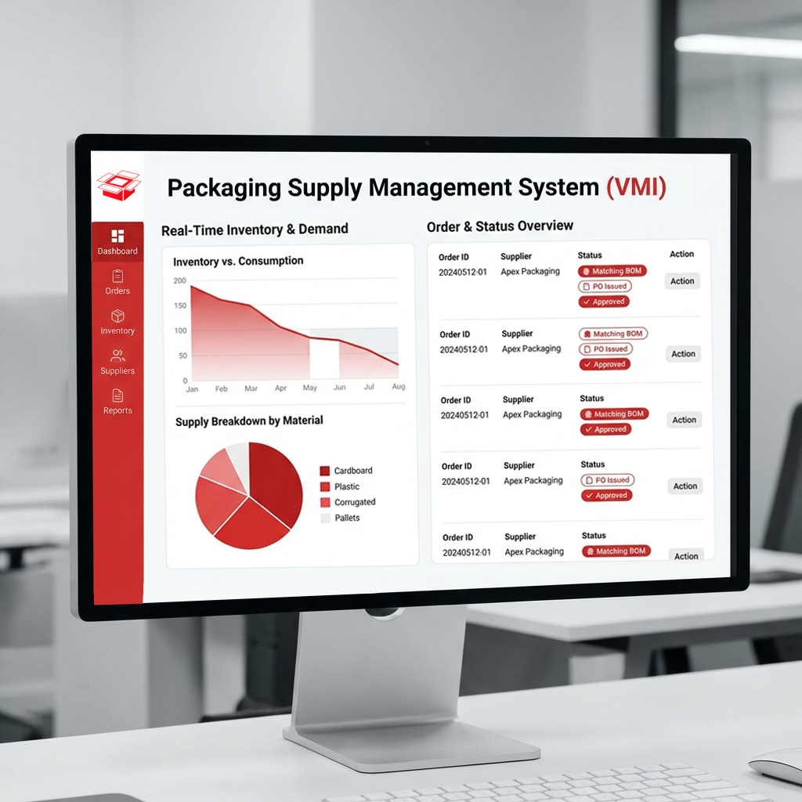
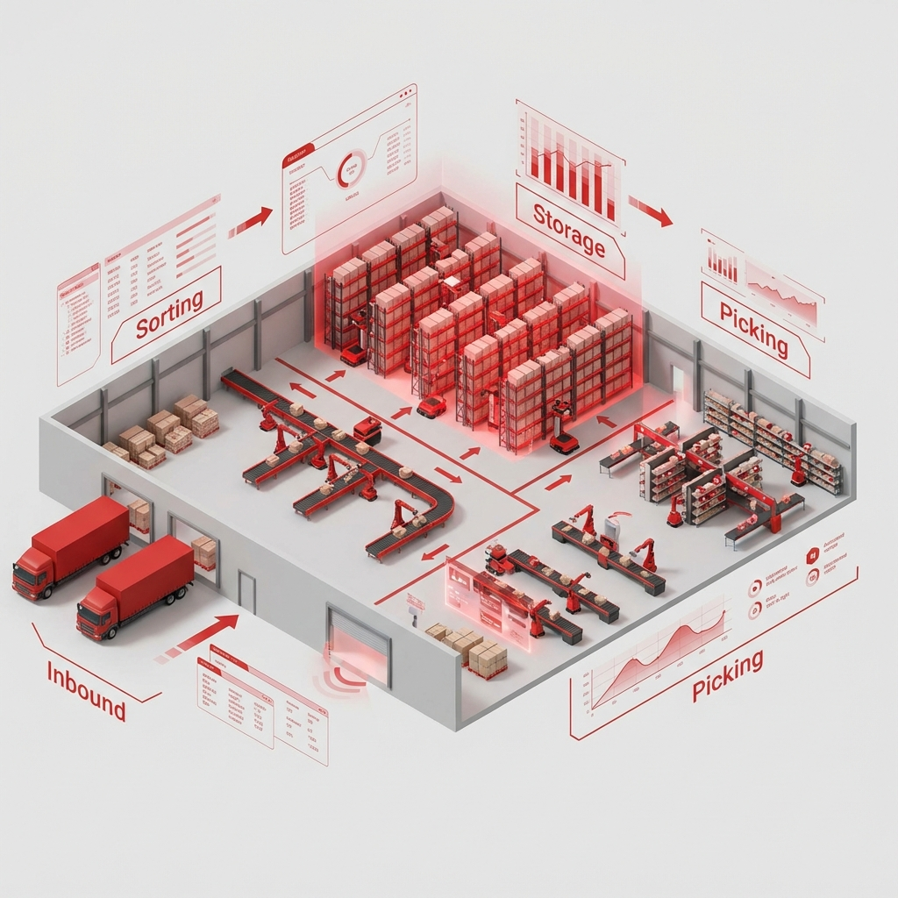
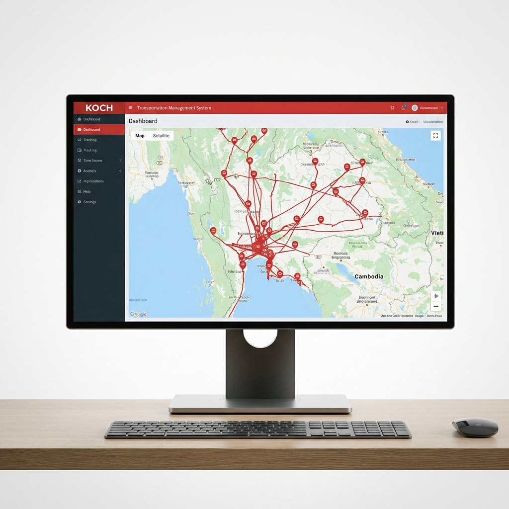
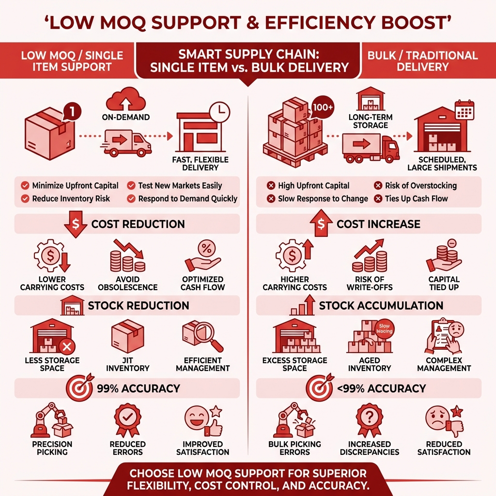

นวัตกรรมและระบบอัจฉริยะที่ช่วยยกระดับประสิทธิภาพการจัดการซัพพลายเชนของคุณ
KOCH ใช้ระบบ Packaging Supply Management System (VMI) ในการบริหารจัดการคำสั่งซื้ออย่างมีประสิทธิภาพ


ในส่วนของคลังสินค้า KOCH มีระบบที่ดูแลครอบคลุมทั้งกระบวนการ
KOCH พัฒนาซอฟต์แวร์ TMS (Transportation Management System) ขึ้นเอง (In-house) เพื่อให้สอดคล้องกับความต้องการของลูกค้า


ซอฟต์แวร์และระบบ VMI ของ KOCH ช่วยแก้ปัญหาให้ลูกค้าที่ไม่ต้องการสต็อกสินค้าจำนวนมาก ดังนี้